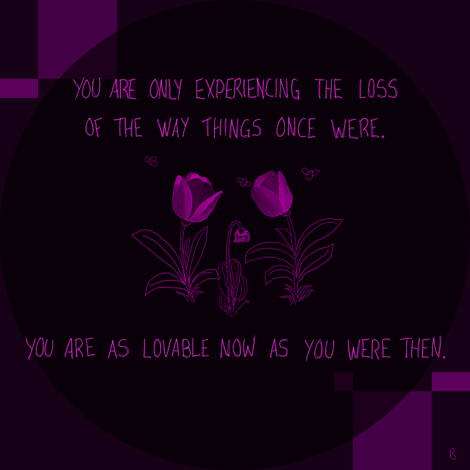

Un Beau Renard: A Series of Affirmations & Illustrations
Un Beau Renard is a series of positive affirmations & illustrations to keep your chin up. Pencil sketch, digital painting, Photoshop.
Love Plant
Being in love isn't a mood, it's a commitment.
#love #affirmations #loveaffirmations #illustrations #organic #flowers
Follow the Butterflies
Tell me, when you are lost and uncertainty is your main worry... How do you find your answers? How do you find your center? The butterflies are an analogy. Would following the butterflies cause you worry?
#love #affirmations #loveaffirmations #butterfly #butterflies #moss #forest #nature

Once Were
You are only experiencing the loss of the way things once were. You are as lovable now as you were then.
#love #affirmations #loveaffirmations #loss #life #cycles #tulip #tulips
Anniversary
March 2019 marked two new milestones to my life:
six years of hormone replacement therapy (hrt)
four years since top surgery (double mastectomy)
Time flies, my loves, time flies. 💜
#TransIsBeautiful #celebrate #milestones #CelebrateYourMilestones #anniversary #TinyVersary #Boobiversary